Stars in the dot constellation twinkle slowly; the dot-matrix cursor blinks once per second.

A highlight frame visits one era at a time, every two seconds.

A block cursor steps through the seven phases, two seconds each.

A scan line sweeps down the modern page every four seconds.

A highlight frame steps down the six rows.

The construction sign and glitter specimens play their real frames at 600 ms and 400 ms.

Flagged lines pulse copper; the editor cursor blinks.

Only the as-built side moves: twinkling stars, a slow marquee, and a once-per-second NEW badge.

The SHIP stamp breathes slowly.

The orchestrator's ONLINE NOW badge blinks once per second.